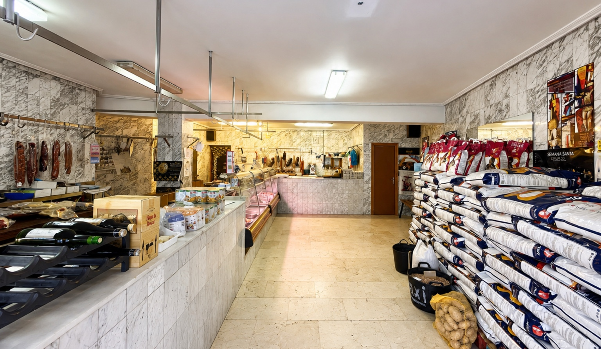
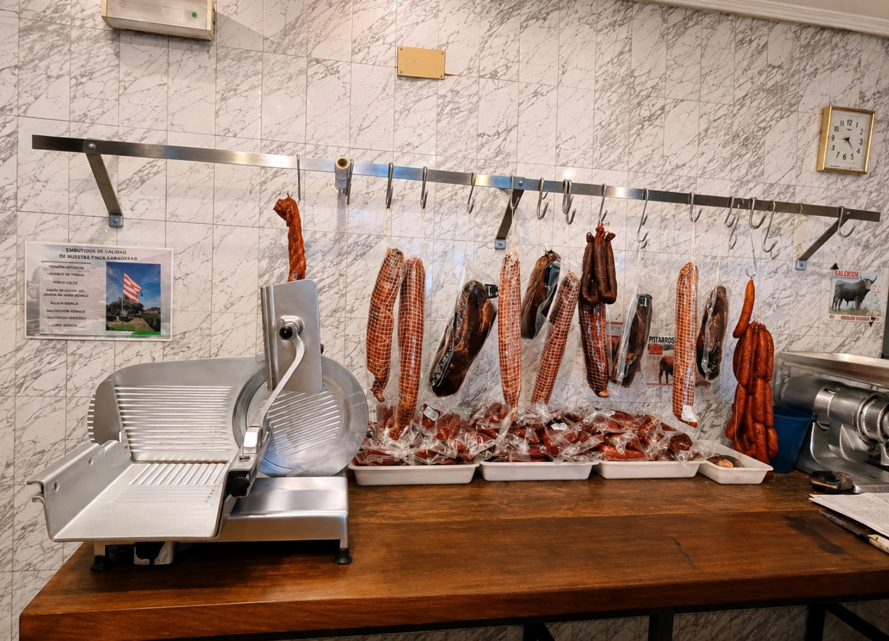
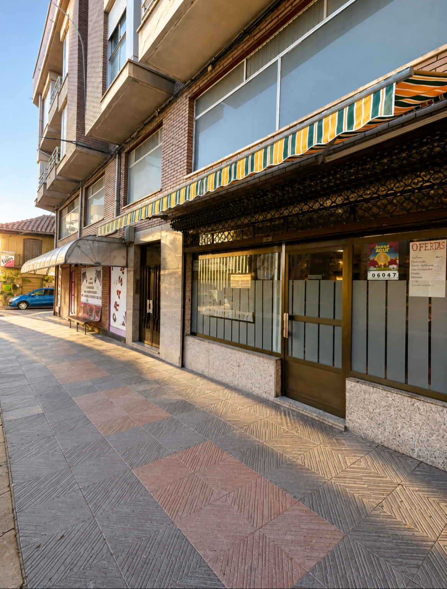

🥩
Carnes
Selección de productos cárnicos para preparar en casa.
Carne, embutidos y atención cercana en una carnicería de confianza de Benavides de Órbigo.
La información pública disponible sitúa el negocio en Benavides de Órbigo y recoge una valoración de 4,7 sobre 5 en Google, con 20 reseñas en la ficha consultada.
Las fotografías muestran especialmente carnes y una amplia selección de embutidos. La tienda también dispone de otros productos de alimentación.
Selección de productos cárnicos para preparar en casa.
Chorizos, piezas curadas y otros embutidos visibles en tienda.
Además de la carnicería, en el establecimiento se observan otros productos de alimentación.
Fotografías reales del establecimiento.



La ficha pública del establecimiento destaca la calidad de sus productos, una buena relación calidad-precio y la atención del personal. La web mantiene ese enfoque: enseñar el negocio tal y como es y facilitar que el cliente pueda contactar o llegar rápidamente.
La ficha consultada reúne 20 reseñas de Google. Entre los comentarios aparecen de forma recurrente la calidad de la carne y los productos, los precios y el trato amable.
Av. del Órbigo, 27 · 24280 Benavides de Órbigo, León